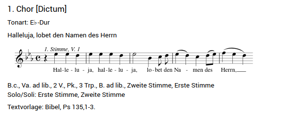

Workshop — Trieste, September 2025¶
Archived page. This page documents the MerMEId workshop held in Trieste, Italy, in September 2025. The schedule, materials, and hands-on session content are preserved here for reference. Some links (especially the Slack invite) may have expired. The test repository credentials listed in the hands-on section are no longer valid.
Schedule¶
Saturday, September 13th¶
| Time slot | Topic |
|---|---|
| 9:00–11:30 | Presentation of the thematic catalogues of Tartini, Elgar, Delius, Telemann, Schubert, (Bruckner?), and Grieg |
| 11:30–12:00 | Coffee break |
| 12:00–13:00 | Discussion of the preceding presentations |
| 13:00–14:00 | Brunch at the Conservatory |
| 14:00–14:30 | MerMEId history |
| 14:30–15:00 | MerMEIding project and research data |
| 15:00–15:30 | The new MerMEId (1) |
| 15:30–16:00 | Coffee break |
| 16:00–16:30 | The new MerMEId (2) |
| 16:30–17:30 | Discussion of the preceding presentations |
Sunday, September 14th¶
| Time slot | Topic |
|---|---|
| 9:00–9:30 | Git introduction for MerMEId users |
| 9:30–12:00 | Practical MerMEId workshop |
Useful Links and Materials¶
MerMEId and MEI¶
- MEI
- MerMEId (previous version)
- MerMEId on GitHub (previous version)
Join the Slack channel of the MerMEId community here! (The link may have expired)
W3C Documentation¶
Ontologies¶
Code and Data Examples¶
-
Single entity Turtle examples:
-
Visualization of example entities:
-
SHACL-form examples:
Hands-on Session¶
Note: The credentials in the table below were created for the workshop and are no longer valid. The test repositories may still exist but cannot be accessed with these tokens.
List of test data repositories used during the workshop:
| Repository URL | Token | User |
|---|---|---|
| workshop-user1.git | (expired) | Carlo |
| workshop-user2.git | (expired) | Federica |
| workshop-user3.git | (expired) | Sofia |
| workshop-user4.git | (expired) | Arnulf |
| workshop-user5.git | (expired) | David |
| workshop-user6.git | (expired) | Berthold |
| workshop-user7.git | (expired) | Clemens |
| workshop-user8.git | (expired) | Elisabetta |
| workshop-user9.git | (expired) | Roberta |
| workshop-user10.git | (expired) | Kevin |
| workshop-user11.git | (expired) | Peter |
| workshop-user12.git | (expired) | Sara |
Part 1: Clone Remote GitLab Data Repository¶
- Copy your data repository URL from the table above.
- Follow the steps in Getting Started.
Part 2: Create a Test Entity and Push It¶
- Follow the steps in Getting Started. Choose a simple entity, such as a Person or a Place. Insert data in the form and press the Save button.
- Then push the file following the steps in Git Workflow.
- Optional: go to your remote GitLab repository and check that the entity file is present.
Part 3: Create Specific Entities and Connect Them¶
Create, save, and share the following entities using the information provided in the code snippets, descriptions, or screenshots. Feel free to enter additional information to better explore the data model and the corresponding forms.
When an entity is pushed, a GitLab pipeline is triggered to generate aggregated entity lists (in Turtle format) published via GitLab Pages. Example list URL:
https://adwmainz.pages.gitlab.rlp.net/nfdi4culture/cdmd/project_templates/workshop-user1/datasets/persons.ttl
(Replace workshop-user1 with your repository name and persons with the entity type.)
Entity 1: Place — Berlin
Create a place entity for the city Berlin. Use the data in the snippet below:
<?xml version="1.0" encoding="UTF-8"?>
<place xml:id="urn:uuid:places/xxxxxxxxxx">
<placeName>Berlin</placeName>
<idno>https://www.geonames.org/2950159</idno>
</place>
Entity 2: Person — Georg Philipp Telemann
Create a person entity for the composer Georg Philipp Telemann. Use the Turtle snippet below:
<urn:uuid:xxxxxxxxxx> schema:familyName "Telemann";
schema:givenName "Georg Philipp";
owl:sameAs <http://d-nb.info/gnd/11862119X>;
schema:gender "male";
a melod:Person.
Entity 3: Performance Event
Create a performance event dated January 1st, 1751, in Hamburg. The description of the performance date is Neujahr (New Year's Day) and this date is known with high certainty. Note that the city Hamburg is not yet in the dataset — you must first create it as a Place entity. The Hamburg entity should appear in the dropdown lists shortly after being pushed.
Entity 4: Expression (Component) — Chor [Dictum] ('Halleluja, lobet den Namen des Herrn')
This is the first of seven movements of the expression Halleluja, lobet den Namen des Herrn (urn:uuid:2293419636). Insert the label Chor [Dictum] and specify the completion status as Complete. Then move to the Music section and encode the following music information:
- Key: as shown in the screenshot
- Meter: as shown in the screenshot
- Instrumentation: choose 1., 2., B. ad lib., 3 Trp., Pk., 2 V., Va. ad lib., B.c
- PAE Incipit:
@clef:G-2@keysig:bBEA@timesig:c@data:4-''EED/EEED/2E'4B''8CD/4EDC{8DE}/4FED - Text incipit: as shown in the screenshot

Entity 5: Expression — Halleluja, lobet den Namen des Herrn
Open the already existing main expression urn:uuid:2293419636. Go to the field Movements/Sections in the Music section and add the expression component you created in Entity 4. Afterwards, add the performance event created for January 1st, 1751, in Hamburg.
Entity 6: Work — Halleluja, lobet den Namen des Herrn
Open the already existing work urn:uuid:555068543. Go to the section Relations and set:
- The relation with the corresponding expression
urn:uuid:2293419636 - The relation is part of with the main work Musicalisches Lob Gottes (
urn:uuid:1031334055)